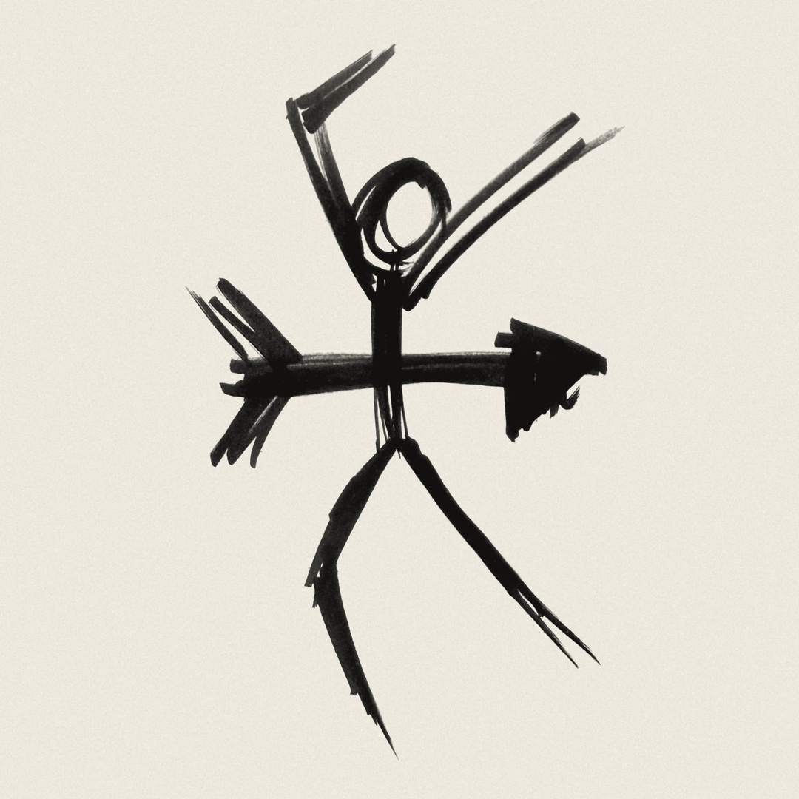
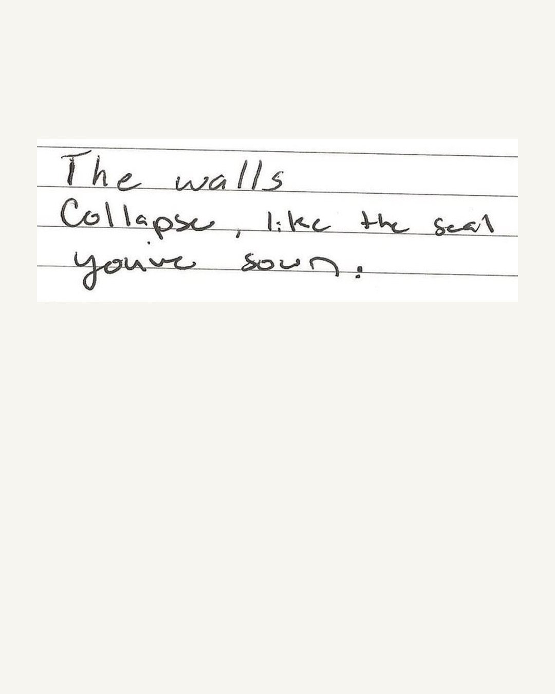

A1 · stack — page card + blurred scan + identity chip


Swap the card image for the selected page crop. The chip is the T06 supplied avatar; it is unapproved (D13).

Swap the card image for the selected page crop. The chip is the T06 supplied avatar; it is unapproved (D13).
Set --focus-x/--focus-y to the page centre. At phone size the line boxes must stay legible; check the QA numbers in the export manifest.

JHW #48: this loads the real pre-cropped cover (site/img/crop/diary1.jpg, opening block 0 of diary1 on a 1080×1350 paper canvas, recorded in images-crops.json) instead of the CSS approximation over the full scan. A1/A2 still use the full-scan CSS crop by design.
Export: set --frame-w: 1080px, screenshot the frame, then resize to
1080×1350. Do not add generated copy to an export. This template carries no
clearance; see production/README.md.